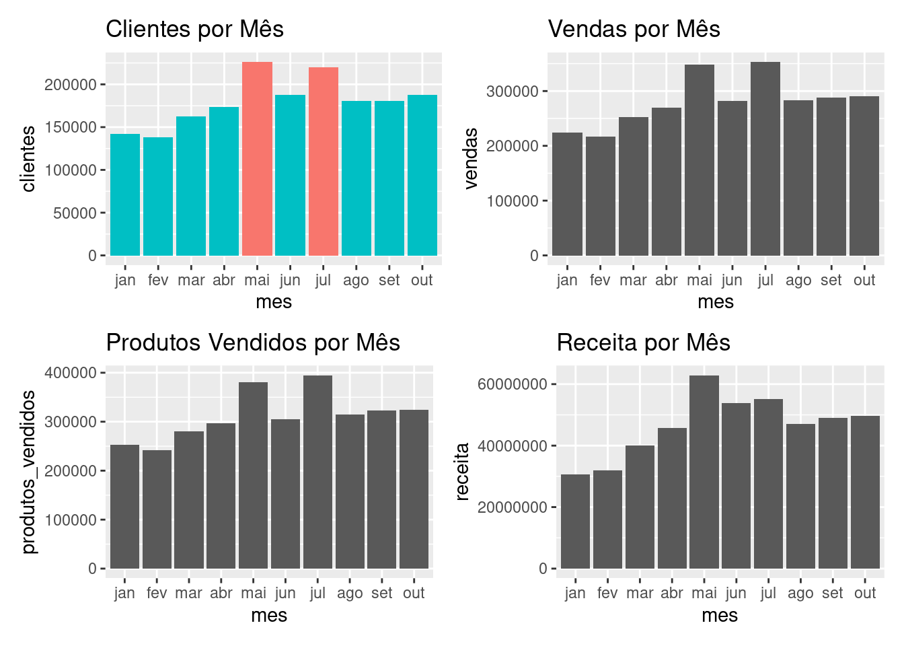
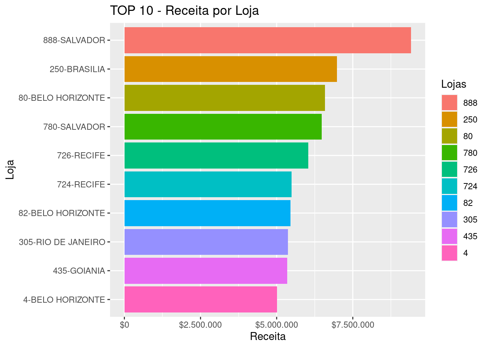
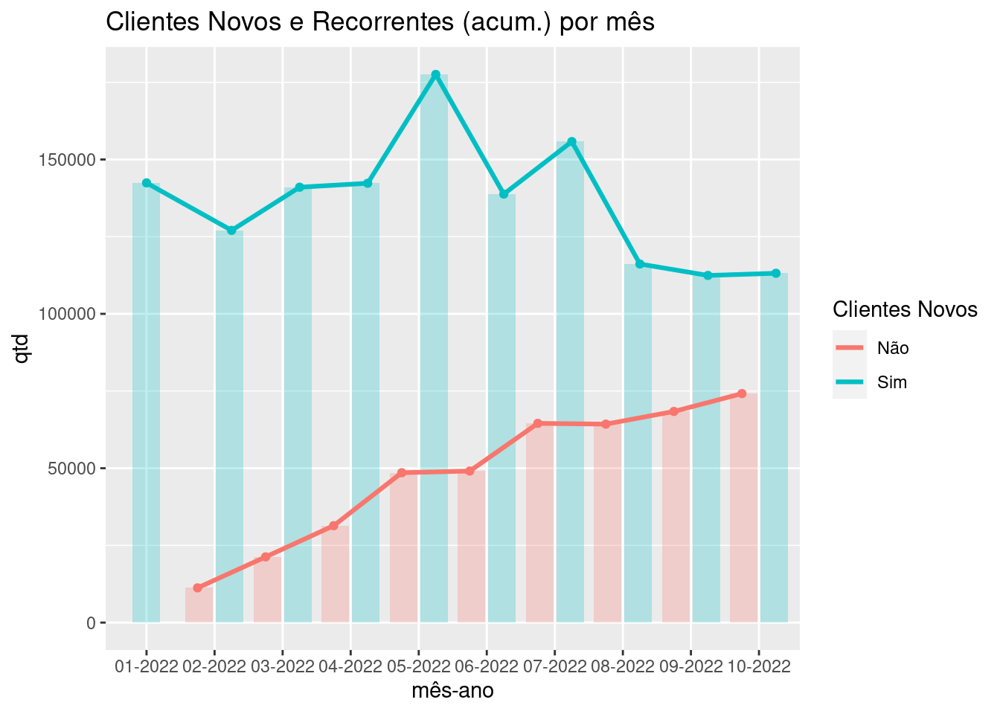
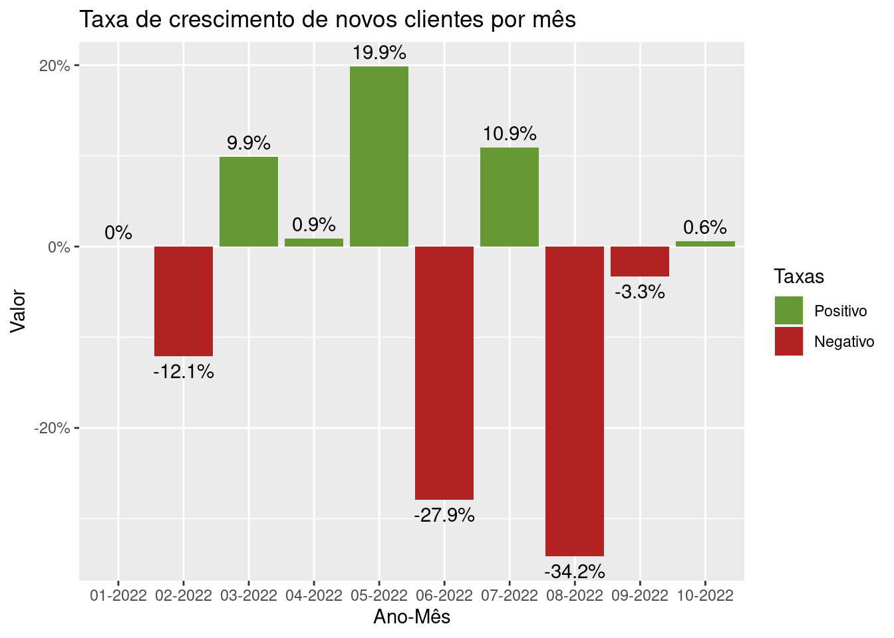

```{r}
library (tidyverse)
library(arrow)
library (lubridate)
library(scales)
library(patchwork)
```Previsão de Compra EDA
```{r}
options(scipen = 999)
# Open Dataset
pq_path <- "data/ds_csv"
pq_path2 <- "data/ds_cliente"
ds <- open_dataset(pq_path)
ds_cliente <- open_dataset(pq_path)
``````{r}
# Total de clientes que compraram
ds |> distinct(cliente) |> collect() |> nrow()
```[1] 1366683```{r}
ds_mensal <- ds |>
mutate (mes = month(data),
mes_label = month(data, label=T, abbr=T)) |>
group_by(mes, mes_label) |>
summarise(clientes_unicos = n_distinct(cliente),
vendas = n(),
produtos_vendidos = sum(qtde_vendas),
receita = sum(valor_pago)) |>
collect()
plot <- ds_mensal |> ggplot(aes(x=fct_reorder(as_factor(mes_label), mes)))
gg_clientes <- plot +
geom_col(aes(y=clientes_unicos, fill = clientes_unicos < 200000), show.legend = F)+
labs(x="mes", y="clientes", title="Clientes por Mês")
gg_vendas <- plot +
geom_col(aes(y=vendas))+
labs(x="mes", y="vendas", title="Vendas por Mês")
gg_prod_vendidos<- plot +
geom_col(aes(y=produtos_vendidos))+
labs(x="mes", y="produtos_vendidos", title="Produtos Vendidos por Mês")
gg_receita <- plot +
geom_col(aes(y=receita))+
labs(x="mes", y="receita", title="Receita por Mês")
(gg_clientes | gg_vendas) /
(gg_prod_vendidos | gg_receita)
```
```{r}
ds_lojas <- ds |>
mutate (mes = month(data),
mes_label = month(data, label=T, abbr=T)) |>
group_by(mes, mes_label, loja, cidade) |>
summarise(clientes_unicos = n_distinct(cliente),
vendas = n(),
produtos_vendidos = sum(qtde_vendas),
receita = sum(valor_pago)) |>
collect()
``````{r}
ds_lojas |>
mutate (loja = as_factor(loja),
loja_label = paste0(loja,"-",cidade)) |>
ungroup() |>
select (loja, receita, cidade, loja_label) |>
group_by(loja) |>
summarise(receita = sum(receita),
loja_label = max(loja_label)) |>
arrange(desc(receita)) |>
slice_head(n=10) |>
ggplot(aes(y=fct_reorder(loja_label, receita), x=receita, fill = fct_reorder(loja, desc(receita))))+
geom_col(show.legend = T)+
scale_x_continuous(labels = scales::dollar_format(big.mark = ".", decimal.mark = ","))+
labs(x="Receita", y="Loja", title="TOP 10 - Receita por Loja")+
guides(fill=guide_legend(title="Lojas"))
```
```{r}
ds_cliente_novos_e_atuais <- ds |>
mutate (mes_ano = format(data, "%m-%Y")) |>
group_by(cliente, mes_ano) |>
select(cliente, mes_ano) |>
distinct() |>
arrange(cliente)|>
ungroup() |>
group_by(cliente) |>
collect() |>
mutate (mes_inicial = min(mes_ano),
Novo_no_mes =case_when(mes_inicial == mes_ano ~ "S", TRUE ~ "N"))
ds_cliente_novos_e_atuais_por_mes <- ds_cliente_novos_e_atuais |>
ungroup() |>
group_by(mes_ano, Novo_no_mes) |>
summarise(n = n())
ds_cliente_novos_e_atuais_por_mes |> ggplot(aes(x=mes_ano, y=n, color=Novo_no_mes, fill=Novo_no_mes))+
geom_col(position = position_dodge2(preserve = "single"),
alpha = 1/4,
color=FALSE,
show.legend = F)+
geom_point(position = position_dodge(width = 1),
show.legend = F)+
stat_summary(aes(group=Novo_no_mes),
fun=sum, geom="line",
position = position_dodge(width = 1),
size=1.1)+
labs(title = "Clientes Novos e Recorrentes (acum.) por mês", x = "mês-ano", y="qtd")+
guides(color=guide_legend(title = "Clientes Novos"))+
scale_color_discrete(labels=c("Não", "Sim"))
```
```{r}
ds |> select(cliente) |> distinct() |> count() |> collect()
``````{r}
ds |>
filter(cliente_novo == "Novos") |> select(cliente, cliente_novo, mes_ano) |>
group_by(mes_ano, cliente_novo) |>
distinct() |>
summarise(n=n()) |>
arrange(mes_ano) |>
ungroup() |>
collect() |>
mutate (taxa_cresimento_clientes_novos = (n - lag(n)) / n) |>
mutate (taxa_cresimento_clientes_novos = replace_na(taxa_cresimento_clientes_novos, 0),
taxa_cresimento_clientes_novos_acc = taxa_cresimento_clientes_novos + lag(taxa_cresimento_clientes_novos)) |>
select(mes_ano, taxa_cresimento_clientes_novos, taxa_cresimento_clientes_novos_acc) |>
pivot_longer(cols = c("taxa_cresimento_clientes_novos", "taxa_cresimento_clientes_novos_acc"),
names_to = "tipo_taxas", values_to = "n") |>
filter(tipo_taxas == "taxa_cresimento_clientes_novos") |>
mutate (neg_pos = if_else(n < 0, "Negativo", "Positivo")) |>
# Plot
ggplot(aes(x=mes_ano, y=n, fill = neg_pos))+
geom_col(position = position_dodge2())+
geom_text(aes(label = paste0(round(n*100,1),"%"), vjust = ifelse(n < 0, 1.5, -0.5)))+
scale_y_continuous(labels = scales::label_percent())+
labs(title = "Taxa de crescimento de novos clientes por mês", y="Valor", x="Ano-Mês")+
scale_fill_manual(values = c("Positivo"="#669933", "Negativo"="firebrick"))+
guides(fill = guide_legend(title = "Taxas") )
```